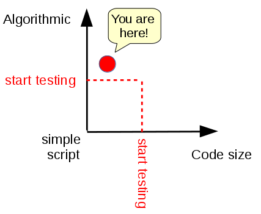

Error handling and testing solutions¶
Introduction¶
In this notebook we will try to understand what our program should do when it encounters unforeseen situations, and how to test the code we write.
For some strange reason, many people believe that computer programs do not need much error handling nor testing. Just to make a simple comparison, would you ever drive a car that did not undergo scrupolous checks? We wouldn’t.
What to do¶
unzip exercises in a folder, you should get something like this:
errors-and-testing
errors-and-testing.ipynb
errors-and-testing-sol.ipynb
jupman.py
WARNING 1: to correctly visualize the notebook, it MUST be in an unzipped folder !
open Jupyter Notebook from that folder. Two things should open, first a console and then browser. The browser should show a file list: navigate the list and open the notebook
strings/strings.ipynb
WARNING 2: DO NOT use the Upload button in Jupyter, instead navigate to the unzipped folder while in Jupyter browser!
Go on reading that notebook, and follow instuctions inside.
Shortcut keys:
to execute Python code inside a Jupyter cell, press
Control + Enterto execute Python code inside a Jupyter cell AND select next cell, press
Shift + Enterto execute Python code inside a Jupyter cell AND a create a new cell aftwerwards, press
Alt + EnterIf the notebooks look stuck, try to select
Kernel -> Restart
Unforeseen situations¶
It is evening, there is to party for a birthday and they asked you to make a pie. You need the following steps:
take milk
take sugar
take flour
mix
heat in the oven
You take the milk, the sugar, but then you discover there is no flour. It is evening, and there aren’t open shops. Obviously, it makes no sense to proceed to point 4 with the mixture, and you have to give up on the pie, telling the guest of honor the problem. You can only hope she/he decides for some alternative.
Translating everything in Python terms, we can ask ourselves if during the function execution, when we find an unforeseen situation, is it possible to:
interrupt the execution flow of the program
signal to whoever called the function that a problem has occurred
allow to manage the problem to whoever called the function
The answer is yes, you can do it with the mechanism of exceptions (Exception)
make_problematic_pie¶
Let’s see how we can represent the above problem in Python. A basic version might be the following:
[2]:
def make_problematic_pie(milk, sugar, flour):
""" Suppose you need 1.3 kg for the milk, 0.2kg for the sugar and 1.0kg for the flour
- takes as parameters the quantities we have in the sideboard
"""
if milk > 1.3:
print("take milk")
else:
print("Don't have enough milk !")
if sugar > 0.2:
print("take sugar")
else:
print("Don't have enough sugar!")
if flour > 1.0:
print("take flour")
else:
print("Don't have enough flour !")
print("Mix")
print("Heat")
print("I made the pie!")
make_problematic_pie(5,1,0.3) # not enough flour ...
print("Party")
take milk
take sugar
Don't have enough flour !
Mix
Heat
I made the pie!
Party
QUESTION: this above version has a serious problem. Can you spot it ??
ANSWER: the program above is partying even when we do not have enough ingredients !
Check with the return¶
EXERCISE: We could correct the problems of the above pie by adding return commands. Implement the following function.
WARNING: DO NOT move the print("Party") inside the function
The exercise goal is keeping it outside, so to use the value returned by make_pie for deciding whether to party or not.
If you have any doubts on functions with return values, check Chapter 6 of Think Python
[3]:
def make_pie(milk, sugar, flour):
""" - suppose we need 1.3 kg for milk, 0.2kg for sugar and 1.0kg for flour
- takes as parameters the quantities we have in the sideboard
IMPROVE WITH return COMMAND: RETURN True if the pie is doable,
False otherwise
*OUTSIDE* USE THE VALUE RETURNED TO PARTY OR NOT
"""
# implement here the function
#jupman-strip
if milk > 1.3:
print("take milk")
# return True # NO, it would finish right here
else:
print("Don't have enough milk !")
return False
if sugar > 0.2:
print("take sugar")
else:
print("Don't have enouch sugar !")
return False
if flour > 1.0:
print("take flour")
else:
print("Don't have enough flour !")
return False
print("Mix")
print("Heat")
print("I made the pie !")
return True
#/jupman-strip
# now write here the function call, make_pie(5,1,0.3)
# using the result to declare whether it is possible or not to party :-(
#jupman-strip
made_pie = make_pie(5,1,0.3)
if made_pie == True:
print("Party")
else:
print("No party !")
#/jupman-strip
take milk
take sugar
Don't have enough flour !
No party !
Exceptions¶
Real Python - Python Exceptions: an Introduction
Using return we improved the previous function, but remains a problem: the responsability to understand whether or not the pie is properly made is given to the caller of the function, who has to take the returned value and decide upon that whether to party or not. A careless programmer might forget to do the check and party even with an ill-formed pie.
So we ask ourselves: is it possible to stop the execution not just of the function, but of the whole program when we find an unforeseen situation?
To improve on our previous attempt, we can use the exceptions. To tell Python to interrupt the program execution in a given point, we can insert the instruction raise like this:
raise Exception()
If we want, we can also write a message to help programmers (who could be ourselves …) to understand the problem origin. In our case it could be a message like this:
raise Exception("Don't have enough flour !")
Note: in professional programs, the exception messages are intended for programmers, verbose, and tipically end up hidden in system logs. To final users you should only show short messages which are understanble by a non-technical public. At most, you can add an error code which the user might give to the technician for diagnosing the problem.
EXERCISE: Try to rewrite the function above by substituting the rows containing return with raise Exception():
[4]:
def make_exceptional_pie(milk, sugar, flour):
""" - suppose we need 1.3 kg for milk, 0.2kg for sugar and 1.0kg for flour
- takes as parameters the quantities we have in the sideboard
- if there are missing ingredients, raises Exception
"""
# implement function
#jupman-strip
if milk > 1.3:
print("take milk")
else:
raise Exception("Don't have enough milk !")
if sugar > 0.2:
print("take sugar")
else:
raise Exception("Don't have enough sugar!")
if flour > 1.0:
print("take flour")
else:
raise Exception("Don't have enough flour!")
print("Mix")
print("Heat")
print("I made the pie !")
#/jupman-strip
Once implemented, by writing
make_exceptional_pie(5,1,0.3)
print("Party")
you should see the following (note how “Party” is not printed):
take milk
take sugar
---------------------------------------------------------------------------
Exception Traceback (most recent call last)
<ipython-input-10-02c123f44f31> in <module>()
----> 1 make_exceptional_pie(5,1,0.3)
2
3 print("Party")
<ipython-input-9-030239f08ca5> in make_exceptional_pie(milk, sugar, flour)
18 print("take flour")
19 else:
---> 20 raise Exception("Don't have enough flour !")
21 print("Mix")
22 print("Heat")
Exception: Don't have enough flour !
We see the program got interrupted before arriving to mix step (inside the function), and it didn’t even arrived to party (which is outside the function). Let’s try now to call the function with enough ingredients in the sideboard:
[5]:
make_exceptional_pie(5,1,20)
print("Party")
take milk
take sugar
take flour
Mix
Heat
I made the pie !
Party
Manage exceptions¶
Instead of brutally interrupting the program when problems are spotted, we might want to try some alternative (like go buying some ice cream). We could use some try except blocks like this:
[6]:
try:
make_exceptional_pie(5,1,0.3)
print("Party")
except:
print("Can't make the pie, what about going out for an ice cream?")
take milk
take sugar
Can't make the pie, what about going out for an ice cream?
If you note, the execution jumped the print("Party" but no exception has been printed, and the execution passed to the row right after the except
Particular exceptions¶
Until know we used a generic Exception, but, if you will, you can use more specific exceptions to better signal the nature of the error. For example, when you implement a function, since checking the input values for correctness is very frequent, Python gives you an exception called ValueError. If you use it instead of Exception, you allow the function caller to intercept only that particular error type.
If the function raises an error which is not intercepted in the catch, the program will halt.
[7]:
def make_exceptional_pie_2(milk, sugar, flour):
""" - suppose we need 1.3 kg for milk, 0.2kg for sugar and 1.0kg for flour
- takes as parameters the quantities we have in the sideboard
- if there are missing ingredients, raises Exception
"""
if milk > 1.3:
print("take milk")
else:
raise ValueError("Don't have enough milk !")
if sugar > 0.2:
print("take sugar")
else:
raise ValueError("Don't have enough sugar!")
if flour > 1.0:
print("take flour")
else:
raise ValueError("Don't have enough flour!")
print("Mix")
print("Heat")
print("I made the pie !")
try:
make_exceptional_pie_2(5,1,0.3)
print("Party")
except ValueError:
print()
print("There must be a problem with the ingredients!")
print("Let's try asking neighbors !")
print("We're lucky, they gave us some flour, let's try again!")
print("")
make_exceptional_pie_2(5,1,4)
print("Party")
except: # manages all exceptions
print("Guys, something bad happened, don't know what to do. Better to go out and take an ice-cream !")
take milk
take sugar
There must be a problem with the ingredients!
Let's try asking neighbors !
We're lucky, they gave us some flour, let's try again!
take milk
take sugar
take flour
Mix
Heat
I made the pie !
Party
For more explanations about try catch, you can see Real Python - Python Exceptions: an Introduction
assert¶
They asked you to develop a program to control a nuclear reactor. The reactor produces a lot of energy, but requires at least 20 meters of water to cool down, and your program needs to regulate the water level. Without enough water, you risk a meltdown. You do not feel exactly up to the job, and start sweating.
Nervously, you write the code. You check and recheck the code - everything looks fine.
On inauguration day, the reactor is turned on. Unexpectedly, the water level goes down to 5 meters, and an uncontrolled chain reaction occurs. Plutoniom fireworks follow.
Could we have avoided all of this? We often believe everything is good but then for some reason we find variables with unexpected values. The wrong program described above might have been written like so:
[8]:
# we need water to cool our reactor
water_level = 40 # seems ok
print("water level: ", water_level)
# a lot of code
# a lot of code
# a lot of code
# a lot of code
water_level = 5 # forgot somewhere this bad row !
print("WARNING: water level low! ", water_level)
# a lot of code
# a lot of code
# a lot of code
# a lot of code
# after a lot of code we might not know if there are the proper conditions so that everything works allright
print("turn on nuclear reactor")
water level: 40
WARNING: water level low! 5
turn on nuclear reactor
How could we improve it? Let’s look at the assert command, which must be written by following it with a boolean condition.
assert True does absolutely nothing:
[9]:
print("before")
assert True
print("after")
before
after
Instead, assert False completely blocks program execution, by launching an exception of type AssertionError (Note how "after" is not printed):
print("before")
assert False
print("after")
before
---------------------------------------------------------------------------
AssertionError Traceback (most recent call last)
<ipython-input-7-a871fdc9ebee> in <module>()
----> 1 assert False
AssertionError:
To improve the previous program, we might use assert like this:
# we need water to cool our reactor
water_level = 40 # seems ok
print("water level: ", water_level)
# a lot of code
# a lot of code
# a lot of code
# a lot of code
water_level = 5 # forgot somewhere this bad row !
print("WARNING: water level low! ", water_level)
# a lot of code
# a lot of code
# a lot of code
# a lot of code
# after a lot of code we might not know if there are the proper conditions so that
# everything works allright so before doing critical things, it is always a good idea
# to perform a check ! if asserts fail (that is, the boolean expression is False),
# the execution suddenly stops
assert water_level >= 20
print("turn on nuclear reactor")
water level: 40
WARNING: water level low! 5
---------------------------------------------------------------------------
AssertionError Traceback (most recent call last)
<ipython-input-3-d553a90d4f64> in <module>
31 # the execution suddenly stops
32
---> 33 assert water_level >= 20
34
35 print("turn on nuclear reactor")
AssertionError:
When to use assert?¶
The case above is willingly exagerated, but shows how a check more sometimes prevents disasters.
Asserts are a quick way to do checks, so much so that Python even allows to ignore them during execution to improve the performance (calling python with the -O parameter like in python -O my_file.py).
But if performance are not a problem (like in the reactor above), it’s more convenient to rewrite the program using an if and explicitly raising an Exception:
# we need water to cool our reactor
water_level = 40 # seems ok
print("water level: ", water_level)
# a lot of code
# a lot of code
# a lot of code
# a lot of code
water_level = 5 # forgot somewhere this bad row !
print("WARNING: water level low! ", water_level)
# a lot of code
# a lot of code
# a lot of code
# a lot of code
# after a lot of code we might not know if there are the proper conditions so
# that everything works all right. So before doing critical things, it is always
# a good idea to perform a check !
if water_level < 20:
raise Exception("Water level too low !") # execution stops here
print("turn on nuclear reactor")
water level: 40
WARNING: water level low! 5
---------------------------------------------------------------------------
Exception Traceback (most recent call last)
<ipython-input-30-4840536c3388> in <module>
30
31 if water_level < 20:
---> 32 raise Exception("Water level too low !") # execution stops here
33
34 print("turn on nuclear reactor")
Exception: Water level too low !
Note how the reactor was not turned on.
Testing¶
If it seems to work, then it actually works? Probably not.
The devil is in the details, especially for complex algorithms.
We will do a crash course on testing in Python
WARNING: Bad software can cause losses of million $/€ or even kill people. Suggested reading: Software Horror Stories
Where Is Your Software?¶
As a data scientist, you might likely end up with code which is algorithmically complex, but maybe not too big in size. Either way, when red line is crossed you should start testing properly:

In a typical scenario, you are a junior programmer and your senior colleague ask you to write a function to perform some task, giving only an informal description:
[10]:
def my_sum(x,y):
""" RETURN the sum of x and y
"""
raise Exception("TODO IMPLEMENT ME!")
Even better, your colleague might provide you with some automated tests you might run to check your function meets his/her expectations. If you are smart, you will even write tests for your own functions to make sure every little piece you add to your software is a solid block you can build upon.
Testing with asserts¶
NOTE: in this book we test with assert, but there are much better frameworks for testing!
If you get serious about software development, please consider using something like PyTest (recent and clean) or Unittest (Python default testing suite, has more traditional approach)
We can use assert to quickly test functions, and verify they behave like they should.
For example, from this function:
[11]:
def my_sum(x, y):
s = x + y
return s
We expect that my_sum(2,3) gives 5. We can write in Python this expectation by using an assert:
[12]:
assert my_sum(2,3) == 5
Se my_sum is correctly implemented:
my_sum(2,3)will give5the boolean expression
my_sum(2,3) == 5will giveTrueassert Truewill be exectued without producing any result, and the program execution will continue.
Otherwise, if my_sum is NOT correctly implemented like in this case:
def my_sum(x,y):
return 666
my_sum(2,3)will produce the number666the boolean expression
my_sum(2,3) == 5will giveFalseassert Falsewill interrupt the program execution, raising an exception of typeAssertionError
Exercise structure¶
Exercises are often structured in the following format:
def my_sum(x,y):
""" RETURN the sum of numbers x and y
"""
raise Exception("TODO IMPLEMENT ME!")
assert my_sum(2,3) == 5
assert my_sum(3,1) == 4
assert my_sum(-2,5) == 3
If you attempt to execute the cell, you will see this error:
---------------------------------------------------------------------------
Exception Traceback (most recent call last)
<ipython-input-16-5f5c8512d42a> in <module>()
6
7
----> 8 assert my_sum(2,3) == 5
9 assert my_sum(3,1) == 4
10 assert my_sum(-2,5) == 3
<ipython-input-16-5f5c8512d42a> in somma(x, y)
3 """ RETURN the sum of numbers x and y
4 """
----> 5 raise Exception("TODO IMPLEMENT ME!")
6
7
Exception: TODO IMPLEMENT ME!
To fix them, you will need to:
substitute the row
raise Exception("IMPLEMENTAMI")with the body of the functionexecute the cell
If cell execution doesn’t result in raised exceptions, perfect ! It means your function does what it is expected to do (the assert which succeed do not produce any output)
Otherwise, if you see some AssertionError, probably you did something wrong.
NOTE: The raise Exception("TODO IMPLEMENT ME") is put there to remind you that the function has a big problem, that is, it doesn’t have any code !!! In long programs, it might happen you know you need a function, but in that moment you don’t know what code put in th efunction body. So, instead of putting in the body commands that do nothing like print() or pass or return None, it is WAY BETTER to raise exceptions so that if by chance the program reaches the function, the
execution is suddenly stopped and the user is signalled with the nature and position of the problem. Many editors for programmers, when automatically generating code, put inside function skeletons to implement some Exception like this.
Let’s try to willingly write a wrong function body, which always return 5, independently from x and y given in input:
def my_sum(x,y):
""" RETURN the sum of numbers x and y
"""
return 5
assert my_sum(2,3) == 5
assert my_sum(3,1) == 4
assert my_sum(-2,5) == 3
In this case the first assertion succeeds and so the execution simply passes to the next row, which contains another assert. We expect that my_sum(3,1) gives 4, but our ill-written function returns 5 so this assert fails. Note how the execution is interrupted at the second assert:
---------------------------------------------------------------------------
AssertionError Traceback (most recent call last)
<ipython-input-19-e5091c194d3c> in <module>()
6
7 assert my_sum(2,3) == 5
----> 8 assert my_sum(3,1) == 4
9 assert my_sum(-2,5) == 3
AssertionError:
If we implement well the function and execute the cell we will see no output: this means the function successfully passed the tests and we can conclude that it is correct with reference to the tests:
ATTENTION: always remember that these kind of tests are never exhaustive ! If tests pass it is only an indication the function might be correct, but it is never a certainty !
[13]:
def my_sum(x,y):
""" RITORNA the sum of numbers x and y
"""
return x + y
assert my_sum(2,3) == 5
assert my_sum(3,1) == 4
assert my_sum(-2,5) == 3
EXERCISE: Try to write the body of the function multiply:
substitute
raise Exception("TODO IMPLEMENT ME")withreturn x * yand execute the cell. If you have written correctly, nothing should happen. In this case, congratulatins! The code you have written is correct with reference to the tests !Try to substitute instead with
return 10and see what happens.
[14]:
def my_mul(x,y):
""" RETURN the multiplication of numbers x and y
"""
#jupman-raise
return x * y
#/jupman-raise
assert my_mul(2,5) == 10
assert my_mul(0,2) == 0
assert my_mul(3,2) == 6
even_numbers example¶
Let’s see a slightly more complex function:
[15]:
def even_numbers(n):
"""
Return a list of the first n even numbers
Zero is considered to be the first even number.
>>> even_numbers(5)
[0,2,4,6,8]
"""
raise Exception("TODO IMPLEMENT ME!")
In this case, if you run the function as it is, you are reminded to implement it:
>>> even_numbers(5)
---------------------------------------------------------------------------
Exception Traceback (most recent call last)
<ipython-input-2-d2cbc915c576> in <module>()
----> 1 even_numbers(5)
<ipython-input-1-a20a4ea4b42a> in even_numbers(n)
8 [0,2,4,6,8]
9 """
---> 10 raise Exception("TODO IMPLEMENT ME!")
Exception: TODO IMPLEMENT ME!
Why? The instruction
raise Exception("TODO IMPLEMENT ME!")
tells Python to immediatly stop execution, and signal an error to the caller of the function even_number. If there were commands right after raise Exception("TODO IMPLEMENT ME"), they would not be executed. Here, we are directly calling the function from the prompt, and we didn’t tell Python how to handle the Exception, so Python just stopped and showed the error message given as parameter to the Exception
Spend time reading well the function text!
Always read very well function text and ask yourself questions! What is the supposed input? What should be the output? Is there any output to return at all, or should you instead modify in-place a passed parameter (i.e. for example, when you sort a list)? Are there any edge cases, es what happens for n=0)? What about n < 0 ?
Let’s code a possible solution. As it often happens, first version may be buggy, in this case for example purposes we intentionally introduce a bug:
[16]:
def even_numbers(n):
"""
Return a list of the first n even numbers
Zero is considered to be the first even number.
>>> even_numbers(5)
[0,2,4,6,8]
"""
r = [2 * x for x in range(n)]
r[n // 2] = 3 # <-- evil bug, puts number '3' in the middle, and 3 is not even ..
return r
Typically the first test we do is printing the output and do some ‘visual inspection’ of the result, in this case we find many numbers are correct but we might miss errors such as the wrong 3 in the middle:
[17]:
print(even_numbers(5))
[0, 2, 3, 6, 8]
Furthermore, if we enter commands a the prompt, each time we fix something in the code, we need to enter commands again to check everything is ok. This is inefficient, boring, and prone to errors.
Let’s add assertions¶
To go beyond the dumb “visual inspection” testing, it’s better to write some extra code to allow Python checking for us if the function actually returns what we expect, and throws an error otherwise. We can do so with assert command, which verifies if its argument is True. If it is not, it raises an AssertionError immediately stopping execution.
Here we check the result of even_numbers(5) is actually the list of even numbers [0,2,4,6,8] we expect:
assert even_numbers(5) == [0,2,4,6,8]
Since our code is faulty, even_numbers returns the wrong list [0,2,3,6,8] which is different from [0,2,4,6,8] so assertion fails showing AssertionError:
---------------------------------------------------------------------------
AssertionError Traceback (most recent call last)
<ipython-input-21-d4198f229404> in <module>()
----> 1 assert even_numbers(5) != [0,2,4,6,8]
AssertionError:
We got some output, but we would like to have it more informative. To do so, we may add a message, separated by a comma:
assert even_numbers(5) == [0,2,4,6,8], "even_numbers is not working !!"
---------------------------------------------------------------------------
AssertionError Traceback (most recent call last)
<ipython-input-18-8544fcd1b7c8> in <module>()
----> 1 assert even_numbers(5) == [0,2,4,6,8], "even_numbers is not working !!"
AssertionError: even_numbers is not working !!
So if we modify code to fix bugs we can just launch the assert commands and have a quick feedback about possible errors.
Error kinds¶
As a fact of life, errors happen. Sometimes, your program may have inconsistent data, like wrong parameter type passed to a function (i.e. string instead of integer). A good principle to follow in these cases is to try have the program detect weird situations, and stop as early as such a situation is found (i.e. in the Therac 25 case, if you detect excessive radiation, showing a warning sign is not enough, it’s better to stop). Note stopping might not always be the desirable solution (if one pidgeon enters one airplane engine, you don’t want to stop all the other engines). If you want to check function parameters are correct, you do the so called precondition checking.
There are roughly two cases for errors, external user misusing you program, and just plain wrong code. Let’s analyize both:
Error kind a) An external user misuses you program.¶
You can assume whover uses your software, final users or other programmers , they will try their very best to wreck your precious code by passing all sort of non-sense to functions. Everything can come in, strings instead of numbers, empty arrays, None objects … In this case you should signal the user he made some mistake. The most crude signal you can have is raising an Exception with raise Exception("Some error occurred"), which will stop the program and print the stacktrace in
the console. Maybe final users won’t understand a stacktrace, but at least programmers hopefully will get a clue about what is happening.
In these case you can raise an appropriate Exception, like TypeError for wrong types and ValueError for more generic errors. Other basic exceptions can be found in Python documentation. Notice you can also define your own, if needed (we won’t consider custom exceptions in this course).
NOTE: Many times, you can consider yourself the ‘careless external user’ to guard against.
Let’s enrich the function with some appropriate type checking:
Note that for checking input types, you can use the function type() :
[18]:
type(3)
[18]:
int
[19]:
type("ciao")
[19]:
str
Let’s add the code for checking the even_numbers example:
[20]:
def even_numbers(n):
"""
Return a list of the first n even numbers
Zero is considered to be the first even number.
>>> even_numbers(5)
[0,2,4,6,8]
"""
if type(n) is not int:
raise TypeError("Passed a non integer number: " + str(n))
if n < 0:
raise ValueError("Passed a negative number: " + str(n))
r = [2 * x for x in range(n)]
return r
Let’s pass a wrong type and see what happens:
>>> even_numbers("ciao")
---------------------------------------------------------------------------
TypeError Traceback (most recent call last)
<ipython-input-14-a908b20f00c4> in <module>()
----> 1 even_numbers("ciao")
<ipython-input-13-b0b3a85f2b2a> in even_numbers(n)
9 """
10 if type(n) is not int:
---> 11 raise TypeError("Passed a non integer number: " + str(n))
12
13 if n < 0:
TypeError: Passed a non integer number: ciao
Now let’s try to pass a negative number - it should suddenly stop with a meaningful message:
>>> even_numbers(-5)
---------------------------------------------------------------------------
ValueError Traceback (most recent call last)
<ipython-input-15-3f648fdf6de7> in <module>()
----> 1 even_numbers(-5)
<ipython-input-13-b0b3a85f2b2a> in even_numbers(n)
12
13 if n < 0:
---> 14 raise ValueError("Passed a negative number: " + str(n))
15
16 r = [2 * x for x in range(n)]
ValueError: Passed a negative number: -5
Now, even if you ship your code to careless users, and as soon as they commit a mistrake, they will get properly notified.
Error kind b): Your code is just plain wrong¶
In this case, it’s 100% your fault, and these sort of bugs should never pop up in production. For example your code passes internally wrong stuff, like strings instead of integers, or wrong ranges (typically integer outside array bounds). So if you have an internal function nobody else should directly call, and you suspect it is being passed wrong parameters or at some point it has inconsistent data, to quickly spot the error you could add an assertion:
[21]:
def even_numbers(n):
"""
Return a list of the first n even numbers
Zero is considered to be the first even number.
>>> even_numbers(5)
[0,2,4,6,8]
"""
assert type(n) is int, "type of n is not correct: " + str(type(n))
assert n >= 0, "Found negative n: " + str(n)
r = [2 * x for x in range(n)]
return r
As before, the function will stop as soon we call it we wrong parameters. The big difference is, this time we are assuming even_numbers is just for personal use and nobody else except us should directly call it.
Since assertion consume CPU time, IF we care about performances AND once we are confident our program behaves correctly, we can even remove them from compiled code by using the -O compiler flag. For more info, see Python wiki
EXERCISE: try to call latest definition of even_numbers with wrong parameters, and see what happens.
NOTE: here we are using the correct definition of even_numbers, not the buggy one with the 3 in the middle of returned list !
[ ]: